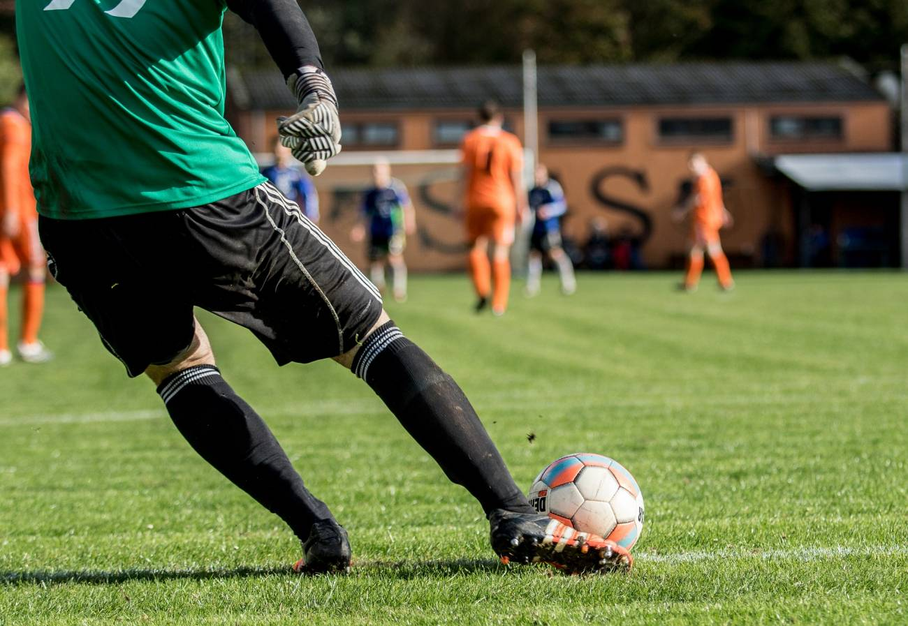

Esta página web surge con la idea de facilitar la labor informativa sobre deportes a todo tipo de personas y sobre todo aficionados, y todas aquellas vinculadas al mundo del fútbol.
Contamos con artículos de diversa índole e interés, partidos, fichajes y sesiones para el desarrollo de los entrenamientos, plantillas de trabajo como recursos de control y organización de un equipo de fútbol,
gran cantidad de vídeos que reforzarán la comprensión de los conceptos y trabajos de scouting, y por supuesto, las mejores aportaciones de nuestros colaboradores.

Si eres un apasionado del fútbol, entonces seguro que además de estar al tanto de todas las noticias relacionadas con el que muchos denominan deporte rey, ves todos los partidos que puedes de nuestra liga y otras de
las ligas más importantes del mundo. Sin embargo, la liga española se ha convertido una de las mejores en los últimos años, ya que siempre ha habido presencia española en las últimas rondas de la UEFA Champions League,
la competición más importante a nivel europeo y considerada una de las más prestigiosas en gran parte del mundo, por todo esto, es importamte que estes al tanto de todas nuestas noticias.